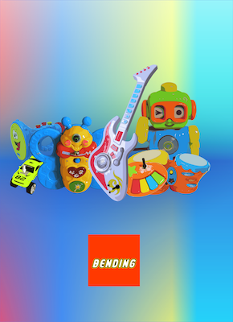

Work
fontaine d'essence (2018)
")
Aux XIeme siecle le permier forage d'un puit de petroler eux lieux aux Etats-Unis. Depuis le pétrole à construit la fortune de plusieur homme d'Affaire comme la fammille Rodfiled. L'explotations de ces resources fragile la planet en pousant celles ci dans ces derniers retranchement.
La fontaine d'essence, un bidon de 10l renverser sur un socle en bois. Des bruits de machine se repéte, pendant que dans le fond le song de vomisement se retrouve dans le bidon d'essence qui recrache ses drenier ressorce avant que son bac ne déborde.
La Fontaine d'essance montre le monde et l'exploitations des ressorces ainsi que la maladie dans le quelle nous plongon le monde.
2018-2017 Quatriéme année, ESADHAR Rouen.
Dévellopement et l'apprendisage d'Arduino. Création de sclupture motorisé et programmé par Arduino.
MécaCarton (2018)

MécaCarton (2018) piéces réaliser pour la deuxiéme étidion du S.M.E.D.A.R est une machine qui fonction avec des éslastique est des énrenage en Cartoon
exposition
Chamtier clandestin sous escalier (2018)
Bunker
Béquille

Elle peut constituer le seul appui d'une figure ou le support nécessaire d'une forme incapable de tenir debout toute seule. Dans le Dictionnaire abrégé du Surréalisme (1938), Dalí en donne la définition suivante : "Support en bois dérivant de la philosophie cartésienne. Généralement employé pour servir de soutien à la tendresse des structures molles." En sport de combat, une béquille est le nom d'une attaque qui consiste à donner un coup de genou dans la cuisse ; En médecine, une béquille est un support aidant les personnes infirmes à avancer.
la béquille est un symbole de fragilité tout autant physique que psychologique qui est à la recherche d’équilibre et de stabilité. Se cache derrière le tromatisme de la violence et les blessures, qui peut resté.
Béquille(2018) est une béquille retournée, fixée et motorisé, qui réalise une chorégraphie programmer, la béquille devient son contraire, inutilisable , il est difficile d’avancer avec (elle est fixée à une planche de bois) pourtant motorisée elle chercher à marcher, se tortillant en hochant la seul partie encore mobile, comme un appelle a l’aidée, ou a des moment provocant rappellent des rafales de mitraillette. les séquences programmées du moteur donne à la béquille tout son sens théâtrale, au début du programme l’on peut entendre trois coups sinifiant la tombé de rideaux, annoncent le début du programme et de la piéces.
Béquille(2018) est une vision satirique sur les conséquence des conflit qui atteignent leur acteur, la béquille dans se sens représente le solda et l’infirme, le civile et la victime, elle donne a réfléchir sur cet objet, qui pourrait devenir obsolète, avec la venue des technologies. Qui sait, les béquilles seront peut êtres dans 100ans remplacées par des prothèses robotisées ?
exposition
Move!

exposition
Roasted Chicken
2017-2016 troisiéme année, ESADHAR Rouen.
Dévelloppement et apprentissage de Processing. Découverte d'Arduino, début dans l'éléctronique.
Bending Band
Le Bending consiste à détorner le courrant dans un circuit élèctrique, en rajoutant des composants, ou en déviant le courant élèctrique par un chemin plus court ou non si il passe par des composant.
Ce document pdf est un livret réalisé au cours de cette années montrant mes différent testes sur différents jouer pour enfant, transformant le son de chaque jouers, par des interrupteurs, des potentiometres, et des sorties son, pour ensuite pouvoir branché les instruments à d'autre sortie son que celle déjà présente dans le jouet.
2016-2015 deuxiéme année, ESADHAR Rouen.
Découverte et apprentissage de Proccessing et de la vidéo. Création de petits Programmes et de vidéos.
Vidéos
Programme
2015-2014 1ere année, ESADHAR Rouen.
Dévellopement des techniques du dessins, et découverte des différents médium.
Volumes
Avion
Dessin/Drapeaux
2014-2013 PréP'Art
Dévellopement des techniques de dessins, et découverte des différents médium.